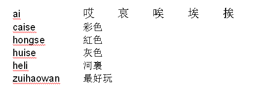

Learning function of the input editor
Requirement:
The control has been switched over to Chinese.
An unknown phonetic notation has been entered into the input editor.
Importing a dictionary
A dictionary can now be generated using any Unicode editor by attaching the corresponding Chinese characters to the pinyin phonetic spelling. If the phonetic spelling contains several Chinese characters, then the line must not contain any additional match. If there are several matches for one phonetic spelling, then these must be specified in the dictionary line by line. Otherwise, several characters can be specified for each line.
The generated file should be saved in the UTF8 format under the name dictchs.txt (simplified Chinese) or dictcht.txt (traditional Chinese).
Line structure:
Pinyin phonetic spelling <TAB> Chinese characters <LF>
OR
Pinyin phonetic spelling <TAB> Chinese character1<TAB> Chinese character2 <TAB> … <LF>
<TAB> - tab key
<LF> - line break
Store the created dictionary in one of the following paths:
../user/sinumerik/hmi/ime/
../oem/sinumerik/hmi/ime/
When the Chinese editor is called the next time, it enters the content of the dictionary into the system dictionary.
Example:
